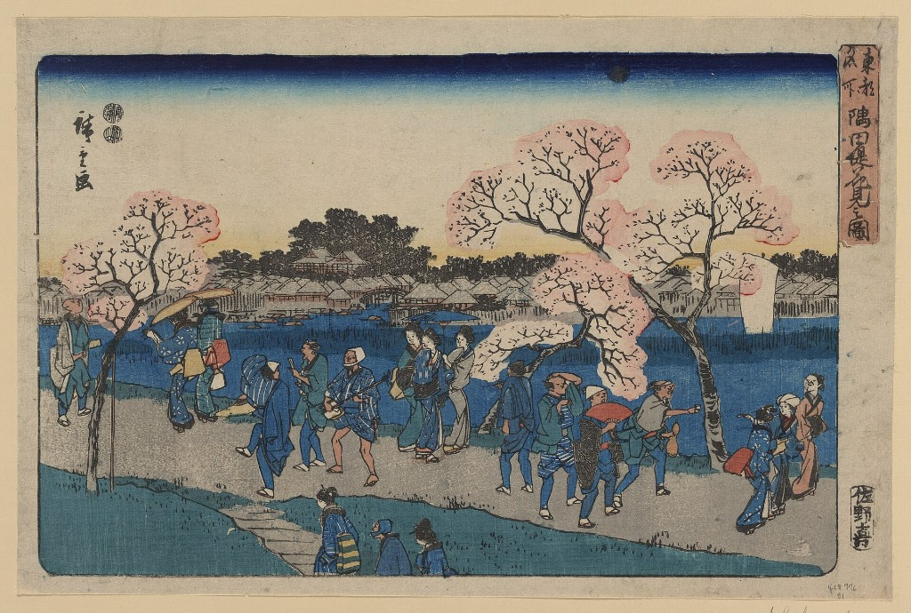

I don't usually like making lists, but I really enjoyed this one.

Sumida tsutsumi hanami no zu
Sunny day, cold breeze, striped picnic blanket and art supplies scattered around
Watching insulin slide into the syringe without an air bubble
Moment I go back home and see my parents and sister
Sitting along the Seine (maybe with friends or partner next time)
Hotel Niagara's biryani (Hyderabad), warm pupusas (San Salvador), spicy chicken sandwich from Grandma Stamm's in Carlisle (now closed 🙁), the chili oil from Ferdinandos (Capetown), Baja Blast (Taco Bell)
When two friends you introduced end up dating
First sip of kombucha after a long organic chem lab
Seeing people be extremely passionate and pursue things they love
Japanese woodblock prints
Weekly rants to my parents and sister
The name 'Clementine'
Good conversation with Uber driver, co-passenger in bus/train ride. (I cannot stay awake in a flight)
Friends who call no matter what time
Sam and Hailey's playlists
Travelling! More like living
Taking pictures of everything, from the texture on fruit and pretty skies to the little 'bottles filled' number on a water fountain
The scent of my home
The word serendipity
Microscopes
Coconut flavored and scented things
How S made me feel and kind of compliments she used to give
Seeing my friends take Ws
Trader Joe's
Well lit spaces (natural lighting is important) filled with lots of plants
When people remember things about me
Making art with M
Planning conference trips just so me and Aabhas can meet and explore a new city every year
My beautiful mentors and the way they patiently listen to all my rambles